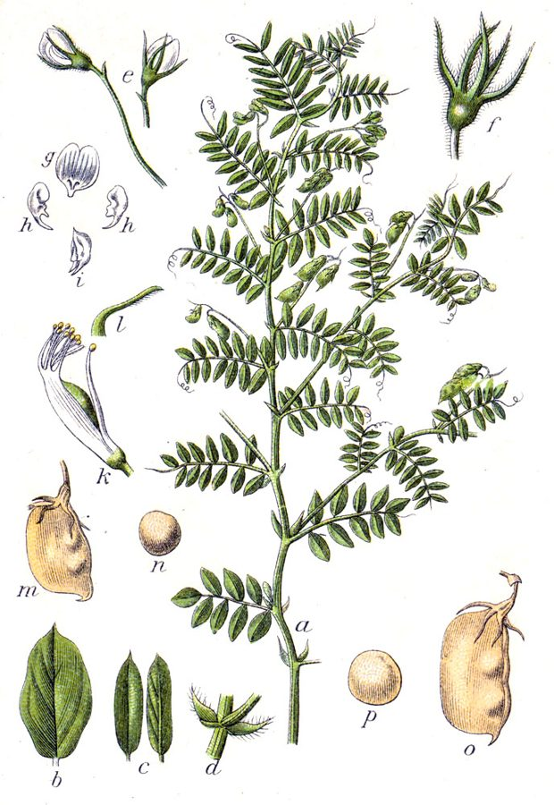

मसूरLentil
Lens culinaris · Fabaceae · FLR-0053

- Scientific name
- Lens culinaris Medik.
- Family
- Fabaceae
- Hindi
- मसूर
- Status here
- cultivated
- IUCN
- not evaluated
When to look कब देखें
Expected mainly in January, February, March, November, December.
मसूर / Lentil
Lens culinaris Medik. — Fabaceae
मसूर — उत्तर प्रदेश की एक प्रमुख रबी (शीतकालीन) दलहन फसल (pulse crop) है। यह एक छोटा, नाजुक और अत्यधिक शाखित (highly branched) वार्षिक शाकीय पौधा है जो 20 से 45 सेमी की ऊंचाई तक बढ़ता है। इसके पत्ते संयुक्त (pinnate compound) और पंख जैसे होते हैं, जिनके अंत में एक छोटा प्रतान (tendril) होता है। सर्दियों के बीच में (दिसंबर-जनवरी) इसमें छोटे, हल्के नीले या सफेद रंग के फूल आते हैं। इसके बाद इसमें छोटी, चपटी फलियाँ (flat pods) लगती हैं, जिनमें एक या दो गोल, लेंस के आकार के चपटे बीज होते हैं। मसूर की दाल (लाल या पीली) उत्तर प्रदेश के घरों में प्रोटीन का एक महत्वपूर्ण आहार स्रोत है। इसके साथ ही, इसकी जड़ें मिट्टी में नाइट्रोजन का स्थिरीकरण (nitrogen fixation) कर भूमि की उपजाऊ क्षमता को प्राकृतिक रूप से बढ़ाती हैं। यह फसल सिंचाई की कम उपलब्धता वाले क्षेत्रों के लिए अत्यंत अनुकूल है।
Quick Identification त्वरित पहचान
| Feature | Description |
|---|---|
| Form | Small, erect or spreading, delicate annual herb (20–45 cm tall), densely covered in fine soft hairs |
| Leaves | Pinnately compound (2–5 cm long) with 4–7 pairs of narrow, oblong-linear leaflets (8–15 mm long); leaf axis ends in a short, unbranched tendril or bristle |
| Flowers | Tiny (4–6 mm long), pale blue, lilac, or white, pea-like (papilionaceous) in structure, borne singly or in small clusters of 2–4 on long, slender stalks |
| Fruit | Short, flat, smooth, oblong pod (10–15 mm long, 6–8 mm wide), containing 1 or 2 lens-shaped seeds |
| Seeds | Flat, biconvex (lens-shaped), 3–6 mm in diameter; seeds are grey-brown or greenish-black on the outside, and split open to reveal a bright orange-red or yellow interior |
Field tip: Look for a very small, delicate, hairy herb in winter crop fields with feathery compound leaves ending in tiny tendrils, producing miniature pale blue flowers and flat pods containing lens-like seeds.
Morphology आकारिकी
Biometrics (typical measurements for specimens cultivated in Gangetic plains of Basti):
| Feature | Measurement |
|---|---|
| Plant height | 20–45 cm |
| Leaflet length | 8–15 mm |
| Leaflet width | 2–5 mm |
| Flower length | 4–6 mm |
| Pod length | 10–15 mm |
Leaves & Tendrils: The leaflets are sessile, light green, and covered in fine pubescent hairs. The terminal tendril is weak and helps the plant cling to neighboring wheat stalks or dry twigs for support.
Root system: Possesses a slender taproot system characterized by numerous lateral roots carrying pinkish, spherical nodules containing nitrogen-fixing Rhizobium bacteria.
Associated Species / Interactions सहजीवी संबंध
Leguminous soil enricher.
- Symbiotic bacteria: Root nodules host Rhizobium leguminosarum bacteria, which capture atmospheric nitrogen and enrich the surrounding cropland soil.
- Intercropping companion: Sown traditionally as an intercrop within wheat (
[FLR-0051 Wheat]) or Indian mustard ([FLR-0052 Mustard]) lines, sharing nutrients and reducing monoculture disease loads. - Pollinator visitations: The minute flowers are visited by small solitary bees (megachilids, halictids) seeking pollen, supporting local insect diversity.
Life Cycle / Phenology जीवन चक्र
- Sowing: Sown in late autumn (November–December) after the monsoon soil has dried slightly, often grown on residual moisture in light sandy-clay fields.
- Vegetative growth: Grows slowly through December, forming low, branching green mounds that cover the field.
- Flowering: Small pale blue-white flowers bloom between December and January.
- Podding: Miniature flat pods develop in January–February, drying to a light straw-yellow or brown color by late February.
- Harvest: The crop is harvested in late February to March. The plants are pulled up by the roots or cut at ground level, dried in the sun, and threshed by beating with wooden sticks.
Pests and Diseases कीट और रोग
- Pod Borer: Caterpillars of the moth Helicoverpa armigera bore holes into the young green pods and feed on the developing seeds.
- Fusarium Wilt: Fungal pathogen Fusarium oxysporum f. sp. lentis infects the roots, causing the leaves to turn yellow, wilt, and dry up during flowering.
- Lentil Rust: Fungal disease Uromyces viciae-fabae forms reddish-brown pustules on leaves and stems, causing premature defoliation.
Agricultural / Human Relevance कृषि प्रासंगिकता
Core pulse and soil-health regulator.
- Nutritional Dal: The seeds are split and dehulled to yield Masoor Dal (red or orange lentil), a primary source of high-quality plant protein, dietary fiber, and iron in the daily diet of UP.
- Agroforestry rotation: Farmers plant lentil as a rotation crop after paddy to restore soil nitrogen levels without using chemical urea.
- Cultivars: Common regional varieties grown in eastern UP include PL-406, PL-639, DPL-62, and K-75.
Traditional and Ethnobotanical Use
- Convalescent food: Thick lentil soup (Masoor ka pani) is traditionally fed to recovering patients, infants, and those with weak digestion as a highly nourishing, easily digestible tonic.
- Skin cosmetic paste: Fine-ground lentil flour (Masoor dal ka ubtan) mixed with milk or cream is applied to the face as a traditional cosmetic pack to cure acne, remove spots, and give the skin a healthy glow.
- Burn soothing: A cold paste of boiled lentils is applied to minor kitchen burns and scalds to reduce heat and soothe pain.
Cultivation Calendar
| Stage | Month(s) |
|---|---|
| Field preparation | October–November (light ploughing to retain moisture) |
| Sowing | November–December |
| Vegetative growth | December–January (requires minimal irrigation) |
| Flowering | January |
| Harvest | Late February–March |
Expected Locally स्थानीय रूप से अपेक्षित
Not a field record. Written from published accounts for eastern Uttar Pradesh. No confirmed local sighting yet — if you have seen it, that is what the atlas needs.
अभी तक स्थानीय पुष्टि नहीं। यह विवरण प्रकाशित स्रोतों से है, किसी अवलोकन से नहीं।
Commonly grown in the lighter soils of Basti district, particularly along the alluvial margins of the Kuwano and Ghaghra rivers. Observed frequently in Vikramjot, Kaptanganj, and Harraiya blocks, where farmers cultivate lentil on river silt deposits (diara lands) using minimal irrigation.
Distribution वितरण
Global range: One of the oldest domesticated crops, originating in the Near East (Fertile Crescent). It is cultivated widely across West Asia, North Africa, Southern Europe, and North America (Canada).
In India: Cultivated throughout all northern, central, and eastern states; Madhya Pradesh, Uttar Pradesh, and Bihar are the major producers.
In Uttar Pradesh: Grown extensively in the plain districts as a major winter pulse.
In Basti district / eastern UP: Cultivated resident; a vital winter pulse crop.
Research Questions शोध प्रश्न
- How does the root nodule density of Lens culinaris change when grown in heavy clay soil compared to sandy silt deposits in Basti? / बस्ती की चिकनी भारी मिट्टी की तुलना में बलुई दोमट मिट्टी में मसूर के जड़ों की ग्रंथियों (nodules) की संख्या में क्या अंतर आता है?
- What is the economic advantage of intercropping Lentil with Mustard compared to cultivating Lentil as a single crop? / सरसों के साथ मसूर की सह-फसली खेती करने से एकल फसल की तुलना में क्या आर्थिक लाभ होता है?
- Does the Fusarium wilt incidence in lentil crops decrease when crop rotation is practiced with non-legumes like wheat?
- Can the traditional lentil flour paste (ubtan) be scientifically validated for its anti-bacterial activity against common skin pathogens?
- Can children dig up a single lentil plant carefully, wash the roots, and count the pink spheres (nodules) to see how plants make fertilizer? — A hands-on soil ecology activity.
Similar Species मिलती-जुलती प्रजातियाँ
| Species | Key Difference | हिंदी |
|---|---|---|
Cicer arietinum (Chickpea [FLR-0056]) | Plants are larger and stouter; leaves are covered in sticky, acidic hairs; pods are swollen and rounded (not flat). | चना — बड़े पौधे, चिपचिपे अम्लीय पत्ते, फूली हुई फलियाँ |
Cajanus cajan (Pigeon Pea [FLR-0055]) | Grows as a tall, woody shrub (1.5–3 m); flowers are large and bright yellow; pods are much larger and linear. | अरहर — लंबा झाड़ीदार पौधा, बड़े पीले फूल, लंबी फलियाँ |
| Lathyrus sativus (Khesari Dal / Grass Pea) | Stems are winged and flat; leaflets are larger (only 1–2 pairs); flowers are bright blue; seeds are angular and wedge-shaped. | खेसारी — चपटा पंखदार तना, नीले फूल, तिकोने बीज |
Taxonomy & Classification वर्गीकरण
Original description. Carl Linnaeus described the species as Ervum lens in 1753. Friedrich Kasimir Medikus transferred it to the genus Lens as Lens culinaris in 1787 in Vorlesungen der Churpfälzischen Physikalisch-Ökonomischen Gesellschaft (Vol. 2, p. 361). The genus name Lens is the classical Latin word for lentil (which later gave its name to the optical lens due to the shape similarity). The specific name culinaris is Latin for "relating to the kitchen/culinary."
Subspecies. Monotypic as a species, but classified into two major cultivar groups: macrosperma (large-seeded) and microsperma (small-seeded, common in India).
Family and order placement. Placed in the order Fabales, family Fabaceae, subfamily Faboideae, tribe Fabeae.
Phylogenetic notes. The genus Lens is closely related to Vicia (vetches) and Pisum (peas), sharing similar compound leaf and pod structures.
IUCN status rationale. Not evaluated (NE) by the IUCN Red List. As an ancient, globally cultivated economic food crop, it faces no conservation threats.
Photo Gallery फोटो गैलरी
References संदर्भ
- Medikus, F. K. (1787). Vorlesungen der Churpfälzischen Physikalisch-Ökonomischen Gesellschaft. Mannheim, Vol. 2, p. 361. [original description]
- ICAR-Indian Institute of Pulses Research (IIPR). Advances in Lentil Cultivation in Eastern India. IIPR Bulletin, Kanpur.
- Indian Council of Agricultural Research (2021). Handbook of Pulse Crops. ICAR, New Delhi.
- Brandis, D. (1906). Indian Trees. Archibald Constable & Co., London.
- Botanical Survey of India. State Flora Series: Flora of Uttar Pradesh. BSI, Kolkata.
- GBIF Occurrence Data — Lens culinaris (2026). GBIF taxon key: 5350010.
Source file: species/flora/crops/lentil.md